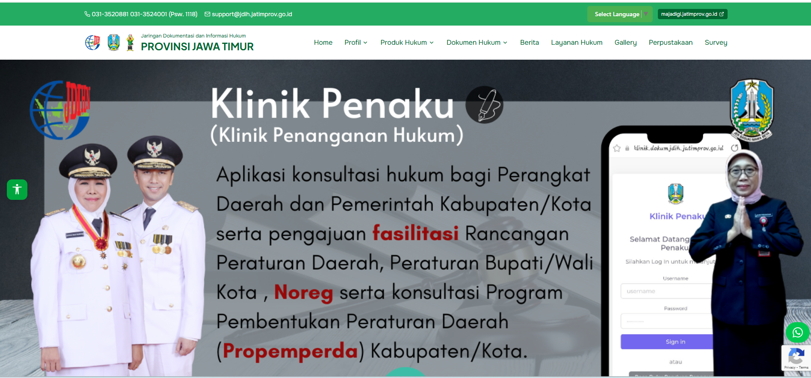
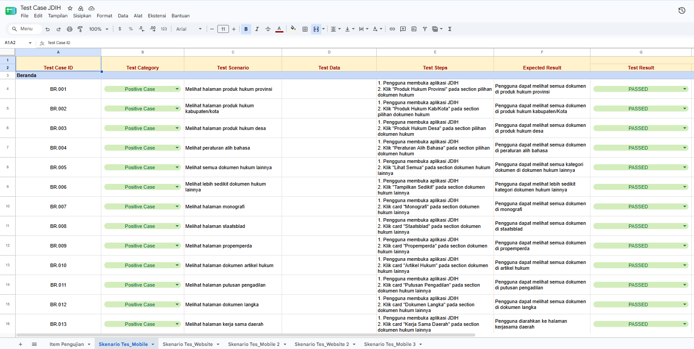
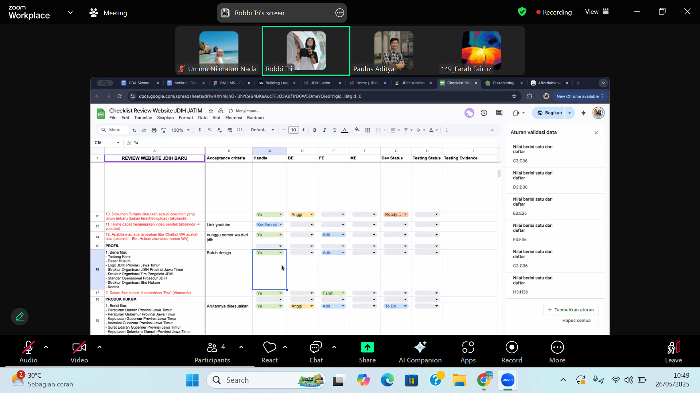
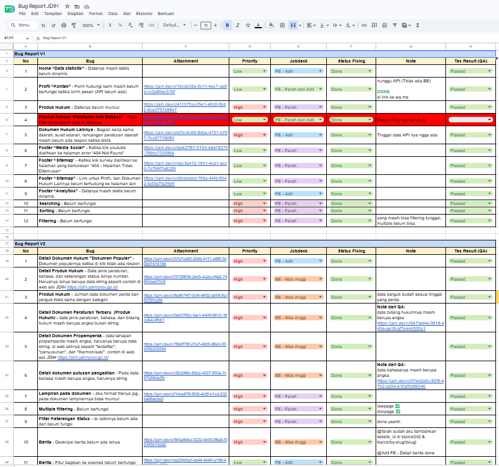

Quality Assurance
Apr – Jun 2025
View Details →
JDIH JATIM Website & Mobile Application
Performed manual functional testing across web and mobile features to verify functionality and compliance with requirements. Identified and documented bugs and test results, coordinated with developers to support issue resolution, and conducted retesting to verify bug fixes and expected functionality.


